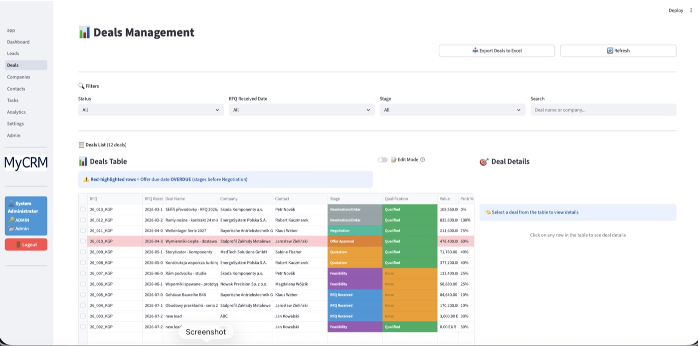
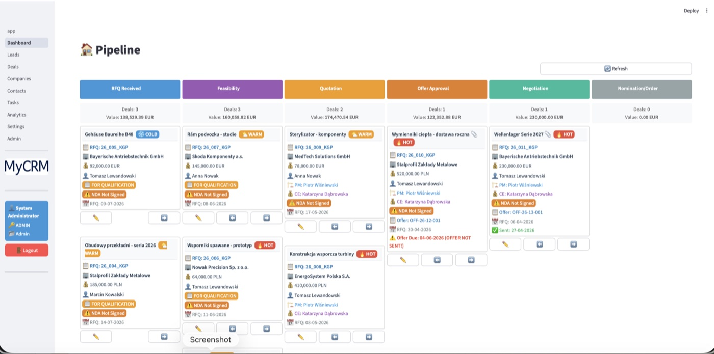
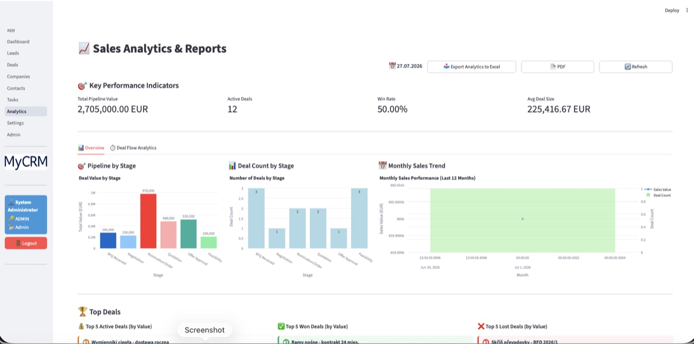
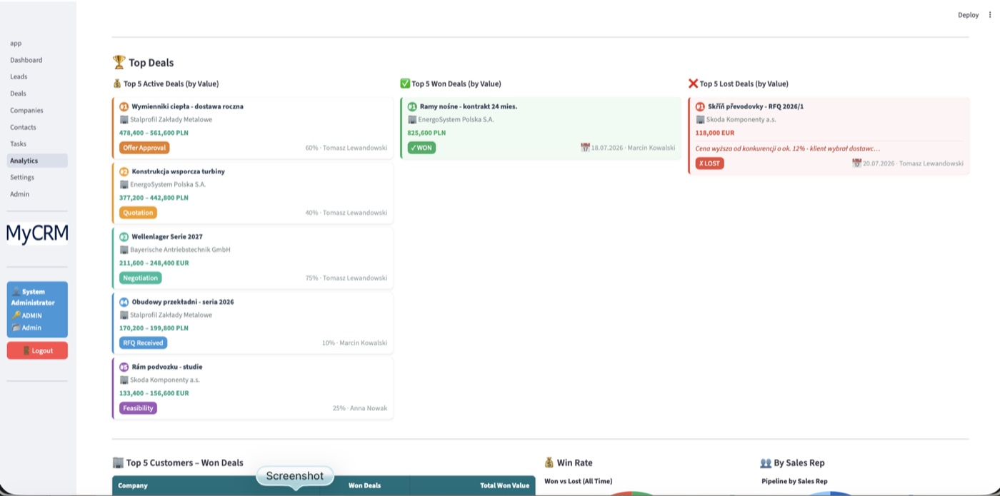

● Soft launch
MyCRM
A CRM built for B2B sales in a manufacturing company — where the process does not end at „deal won", but runs through technical costing, the quote and negotiations all the way to nomination.
The problem
Selling industrial components follows a different logic from the classic CRM funnel. An enquiry first goes to a feasibility review, then to cost estimation, then to quote approval — and each of those steps involves a different person and needs a different set of data. Off-the-shelf CRMs either do not model this at all, or require expensive configuration. MyCRM maps the process directly.
A pipeline with quality gates
Every stage has defined entry conditions, checked whenever someone tries to move a deal forward. You cannot reach costing without an assigned project manager and cost engineer, nor quote approval without an offer number and an uploaded PDF. Stages cannot be skipped either. As a result, the data in the system is complete by design, not by the user's goodwill.
What it looks like




Features
- Kanban — a visual pipeline with drag-and-drop between stages, temperature markers (HOT/WARM/COLD) and automatic archiving of closed deals
- Leads and conversion — a separate relationship funnel, with conversion to a deal carrying over company and contact data; optionally creates the project folder structure on disk
- Quote generation — Word documents from
.docxtemplates (Polish and English), filling in deal data and inserting price tables from Excel - Numbering — automatic RFQ and offer numbers from configurable patterns (
YY_XXX_KGP,OFF-YY-DEAL-XXX), editable from the settings screen - Tax-registry API integration — company details pulled by VAT number, cached in the database for 30 days
- Analytics — conversion reports, pipeline value and time-in-stage; Plotly charts, export to PDF and Excel
- Import/export — bulk loading of companies and contacts from Excel, with a template and validation
- Attachments — files stored in the database as
BYTEA, so a single backup covers the complete dataset with no dependency on the file system - Multi-currency — conversion to a base currency using rates configured in the system
Permissions and security
Six roles (admin, sales, PM, cost engineer, sales+CE, viewer) with 24 permissions each, held in the database and editable from the admin panel without touching the code. Login built on bcrypt with a cookie session, a full audit trail and a history of role changes. Deletion is soft — records go to a bin and an administrator can restore them.
Scale
Deployed on Linux (systemd + nginx) or Windows.
Solutions worth a mention
Database schema versioning
A dedicated migration runner with a tracking table, status /
up / baseline commands and a refusal to run when the
state is inconsistent. It was written after three migrations quietly bypassed
the production database.
Numbering that survives data imports
The RFQ number generator reads the pattern from configuration and reconstructs the sequence from existing records, including deleted ones — because a number once issued must never return to the pool.
A dual installation path
A full SQL script for a fresh database and an idempotent catch-up section for existing ones — both kept in agreement and verified automatically.
Stack
Want to talk about it?
Happy to go into the details of the rollout, or into a similar system for your own process.
Message me on LinkedIn ↗